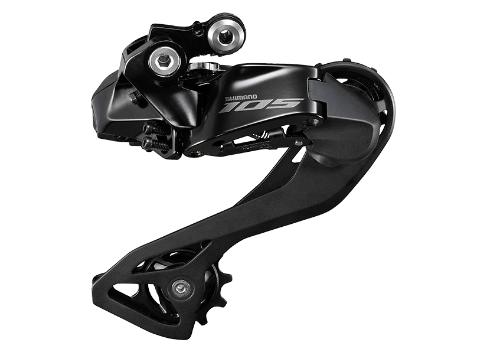

自组公路车指北
讲在前面，其实我只组装过山地车，对于公路自行车还是不甚了解，此文更多的是我在公路自行车选择过程中的一些纠结和记录，最后我大概率还是选择成品的国产公路车。
零件入门与选购
变速及传动系统
Sram(速联)、Shimano(禧玛诺)、Campagnolo(康帕纽罗)是变速系统的三巨头。一般来说，Shimano是三者中最具有性价比的，Sram同价位比Shimano更贵一些，而Campagnolo不是我等普通人玩得起的东西。当然，厂家的变速和传动系统是有等级划分的，以Shimano为例，其分为了适用于休闲通勤的Claris系列(R2000)，入门级别的Sora系列(R3000)，入门高级的Tiagra系列(4700)，竞速入门的105系列(R7000)，竞速中级的Ultegra系列(R8000)和终极的Dura Ace (R9100)。关于套件的具体分别请见美骑网的博文《公路车入门指南：5分钟带小白了解套件等级》。
我们所讲的变速和传动系统其实包括前拨、后拨、手变、曲柄牙盘、飞轮、链条、刹车(夹器)和中轴。但是目前大多数变速套件都不提供中轴了，因为车架厂的中轴现在做的五花八门，没办法统一，所以这里我们把中轴刨去。
大套和小套？
大套和小套是很多车友挂在嘴边的话，其实是一种俗称。大套就是一套完全的变速和传动系统，而小套则仅包含前拨、后拨、手变、飞轮、链条。在组车的过程中，可以根据自己的选择购买套件，当然也可以不买套件，单买部分零件，实现定制最大化。但是其实厂家并没有什么大套和小套是说法哦~~~
希望不会有人误会大套小套是避孕套的直径，不会真的有人脑中黄色废料这么多吧……
曲柄牙盘
因为大部分套件取消了中轴，曲柄组则包含了曲柄臂和链条运行的牙盘。一般曲柄上有2~3种尺寸不同的牙盘，以供变速需要。但是近年，Sram推出的牙盘取消为一个了，据说可以实现更好的变速效率。下图为Shimano 105 series曲柄牙盘图。如果要考虑到骑行环境，平路居多可以选择曲柄较长的牙盘，如果以爬坡居多可以选择相对较短的牙盘。
飞轮
飞轮，是与后轮联动提供变速的轮盘组，具有不同的尺寸和齿数。

前拨
前拨，前拨链器，用来波动牙盘上的链条。在部分高级Sram套件上没有前拨。

后拨
后拨，全称为后拨链器，顾名思义是用来在后牙盘上波动链条的。

手变
公路车在前把的变速控制器和刹车全部继承于手变上。这也是为什么小套会包含手变和前后拨的原因之一。

刹车(夹器)
主流的刹车方式为碟刹、鼓刹和V/C刹。碟刹采用刹车碟制动方式，鼓刹采用制动鼓刹车，V/C刹车采用V/C型摩擦片在车圈处刹车(表述可能不准确)。关于鼓刹、碟刹、V/C刹车的具体请见知乎阿尔法的博文《碟刹vs鼓刹》和美骑网《山地车碟刹与V刹，新人必看！(图文)》。下图为油碟刹车图。
链条
链条就不用放图片了吧，大家都认识……
价格与推荐
大套价格对比
对于入门骑行的玩家，一般105顶天了，Tiagra级别已经是优秀的配置。这里以105 R7000为例对比各个渠道的价格。
| 渠道 | 淘宝 | 闲鱼 | 闲鱼 | CRC | wiggle |
|---|---|---|---|---|---|
| 全新 | 是 | 否(拆车) | 否 | 是 | 是 |
| 套装 | 大套 | 大套 | 大套 | 大套 | 大套 |
| 价格 | 4800 | 4500 | 3500 | 3850 | 3850 |
这里的价格是裸价不包含运费的，如果考虑到运费，我当前在澳门，使用Buyandship从英国转运，大概需要200MOP合170RMB(以3Kg记重)，以此来看即使转运在英国购买也比在大陆购买便宜。当然，也可以从闲鱼上购买拆车件，价格相对较低，但是油管一般要自己重新购买咯。
其他
但是大多数人应该不会直接买大套的吧……所以，仅购买小套然后选择其他品牌的零件相对来说是cp值比较高的。
这里推荐一些国产品牌，比如曲柄牙盘可以买Prowheel，油碟刹车可以买Tektro、IIIPRO(ANV好像是IIIPRO换壳，也可能以前叫ANV)、ONIRII等等很多优秀的国产品牌都值得选购。
车架
如果你顺利熬过了上一个section，那么恭喜你，你将进入另一个大坑——车架。
车架的选择大体上可以分为三个因素，涂装，材料/重量，几何。
涂装
涂装是最显而易见的，也是影响入门者选择的重点。
但是这个是最啥可以说的，涂装就你看着好就是好咯，没啥可以推荐的。
材料/重量
目前公路车的材料主要有碳钢、铝合金和碳纤维以及钛合金。
从寿命的角度来说，碳钢的寿命当然是最长的，甚至有可能你摔了，你不在了，它还在。
铝合金和碳纤维其实质量相近，寿命也相近。铝合金因为可塑比较困难，所以车身几何相对固定；极致的碳纤维能够把车身的重量压倒比顶级铝合金低1.5Kg吧。但是碳纤维的抗扭能力其实是不如铝合金的。铝合金和碳纤维的寿命大多数在5、6年，所以不用担心寿命问题，等它真正到寿命了，你可能都换了好几台车了。
钛合金继承了碳钢的强度和寿命，铝合金的轻量化，但是太贵了……
车身几何
车身几何是一件极其复杂的事情，对于想要一直骑行下去的人，我还是建议做fitting虽然我没有做过fitting。
在这里推荐B站ARTOUCH岸塔的视频《骑行入坑第一步！选对车架！》，我就不班门弄斧了。
购买车架
车圈子里面流行一句话——“DIY已死”，确实，在现在国产品牌强势进入的过程中，DIY低端车的成本很接近于直接购买整车，因而导致车架的选择范围较少。
钢车架
Tsunami的子品牌Seaboard 云岸是硕果仅存的钢架品牌了(大概确信)
铝合金车架
整车中常见的铝合金和碳钢材质的车架已经很少见了，现在所售卖的车架以碳纤维为主。不过还是有一些值得推荐的铝合金车架品牌，比如卜威 Kinesis、峰大 Mosso、IZIP、Cannondale 佳能戴尔、Twitter 骓特。当然也可以购买捷安特、美利达的拆车架……价格也是便宜的，或者UCC 环球自行车、Dagger变色龙的车架。如果有关注B站一位UP叫乐百客Lebycle单车，他们家的铝合金车架还是不错的，做工和拓展性都是一流也可以考虑。
钛合金车架
钛合金车架，能把孙子送走的车架，实在是太昂贵了，如果不是重装骑行，真的不建议购买。
比较好好的钛合金车架有北京航轮 Hilight、Ti Cycles和Tiris。我个人觉得钛合金，没啥好对比的，反正坏的时候就是你重孙的时候了……
碳纤维车架
现在的碳纤维车架属于是鱼龙混杂，好多爱好者说国碳不行，不过，有一说一，一般真的买这种千元国碳的也不会涉及到什么高强度摇车、压弯等应用吧……从这个角度来说，我觉得国碳没有什么可以黑的。之前千元爆款野兽SpeedX车架，各位大佬直播锯开不是用料也很扎实嘛。
不过，一旦你决定要买碳纤维车架，那就必须要接受低价碳纤维车架的一些小瑕疵，比如坐管有倒刺、五通有公差等等，克服了这些问题，那低价碳纤维车架就适合你。
比较优秀的碳纤维车架品牌，可以选择峰大 Mosso、UCC 环球自行车、ZGL 神鹰、Seraph 炽天使、Winspace 银贝斯、Pardus 瑞豹、Spcycle、Cinelli、Tideace、EARRELL、TFSA、Pinarello、ShotWind、Carbonda。
在这一众品牌中，Mosso的产品分级最乱；ZGL的实力应该是最强的，可惜营销太差了；EARRELL据说是台湾车厂子，但是没有找到官网，也少有测评；TFSA感觉专注于低端碳纤维公路车，价格都不高，预算不足可以考虑，但是不推荐，小瑕疵很多；Winspace是大牌，贵，其他不用说；Tideace是国内碳纤维T0之一吧，车架没得黑。